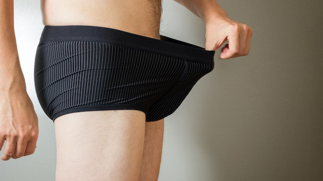
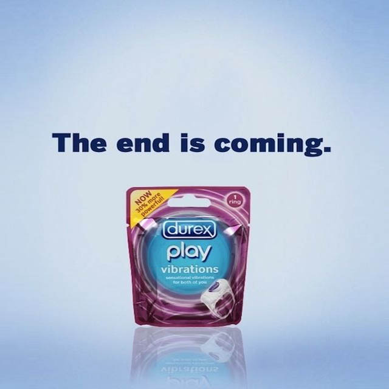
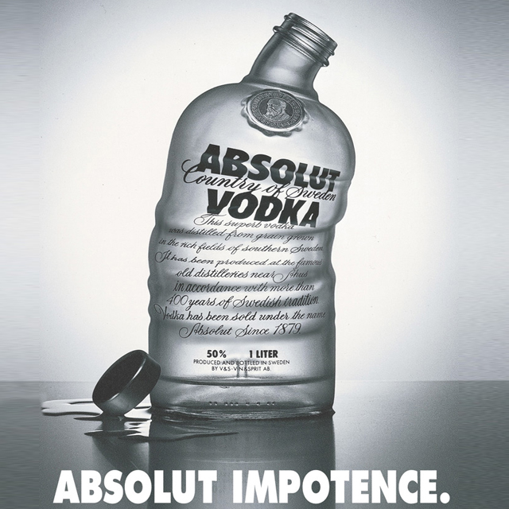
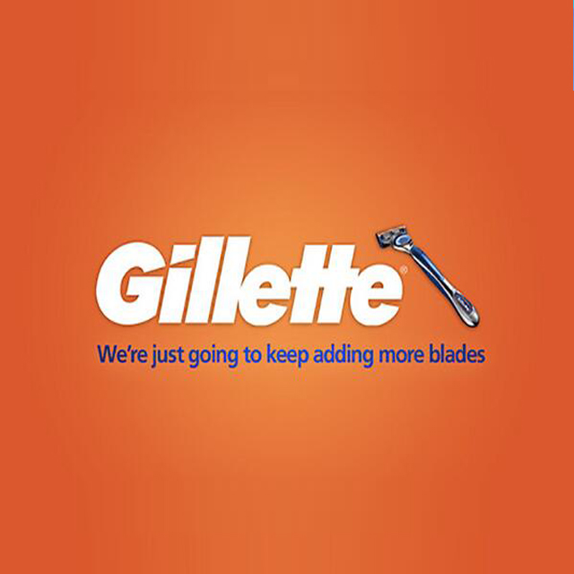

His instrument: the worst ways a man can refer to his own genitalia
LIKE Eskimos having a hundred words for snow, adult men have a wide variety of names for the thing hanging between their legs. Here are the worst:
Member
It's a bad enough word on its own, but it's rarely seen without its bile-raising adjective partners: swollen, turgid or, worst of all, engorged. It's a strangely formal name for genitalia and still makes you want to throw up.
Manhood
You're only allowed to refer to a body part using this name if it's swaddled behind woollen breeches and chainmail as part of your uniform as a medieval knight. And even then, any fair maiden worth her salt would consider you a creep, while being forced to marry you regardless.Organ
It's not a mighty piped keyboard that soars to the ceiling of a cathedral, it's a flesh tube you piss out of. It is therefore is not worthy of the name. If you must compare it to a musical instrument, be honest and call it a piccolo.Phallus
Half unpleasantly clinical, half something that would appear in Jilly Cooper's novel, this shouldn't be used by anyone in any romantic setting. The only thing that will turn your partner off quicker is if you insist on calling it 'Little Gary', or whatever your first name is. Calling it 'Little Gary' when you're called Phil begs even more questions.Length
You'd need to be pretty confident in the size department if you're prepared to go ahead and call it your 'length' before the object of your affections has seen it. They'll be well within their rights to accuse you of false advertising if it would have been more accurately described as your 'tininess'.Meat
Very few people have looked at defrosted lamb mince and thought to themselves that it has a physical quality they would like for their own privates. In fact, if your knob looks like any sort of meat product at all, including a saveloy, you should visit your GP.


